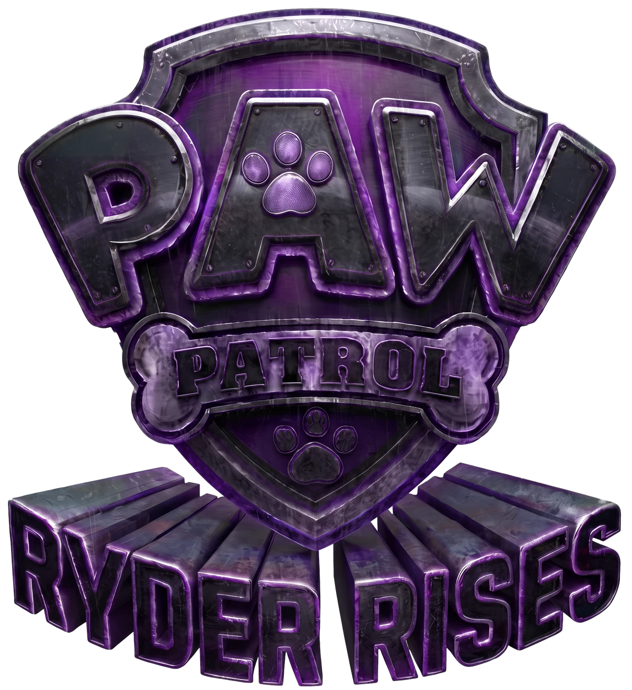
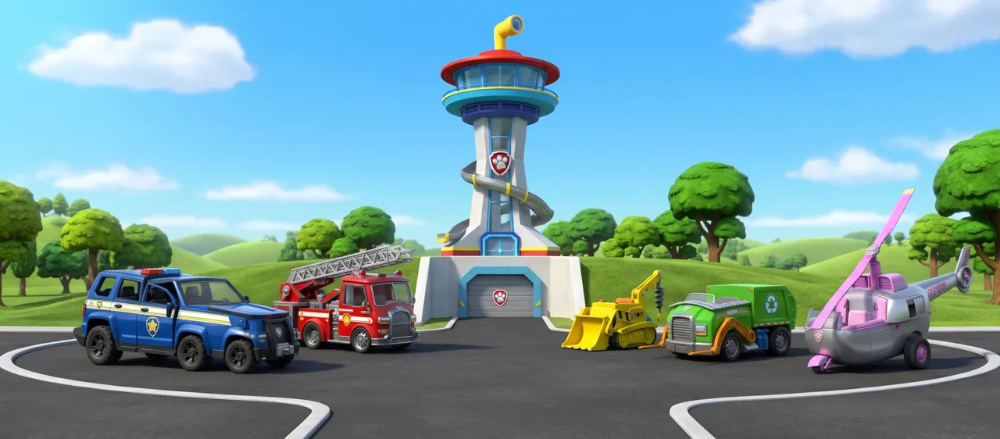
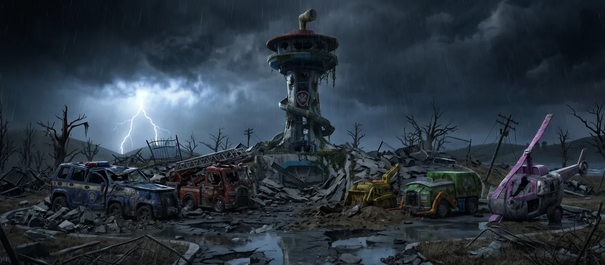
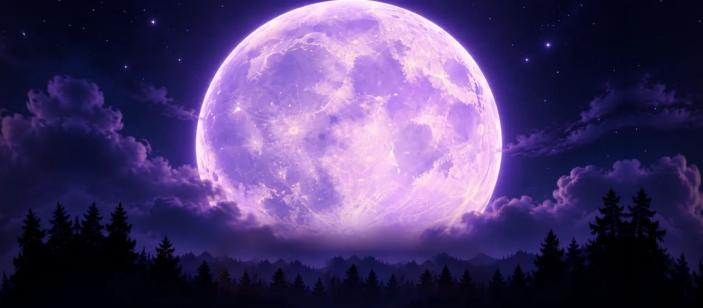
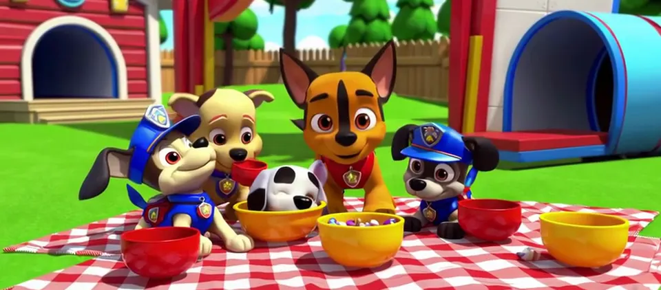
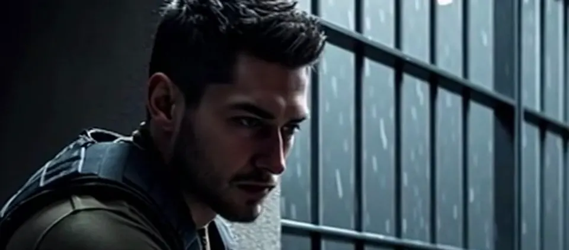
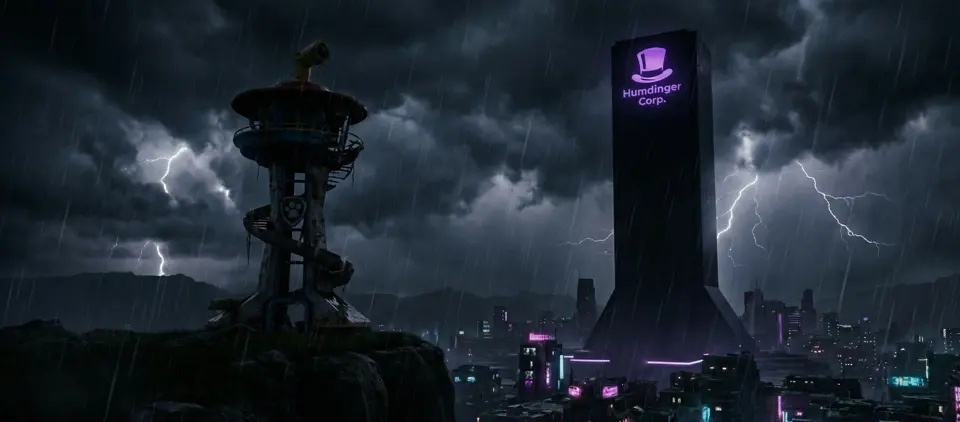
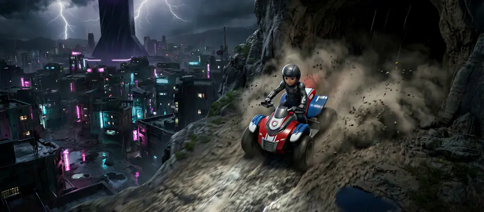
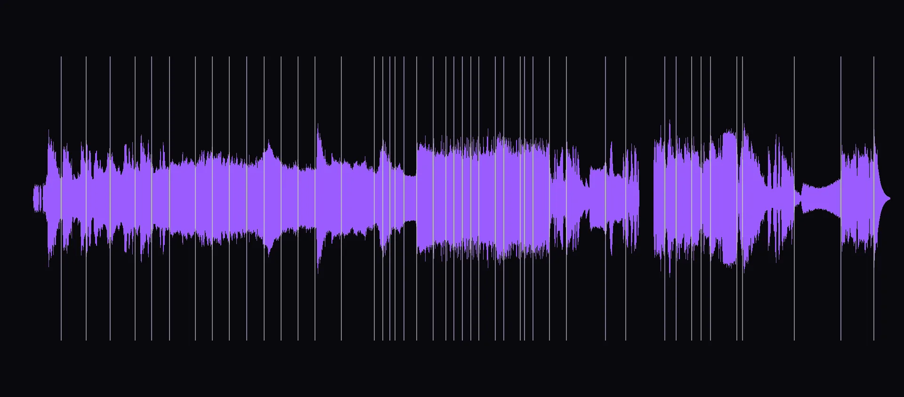
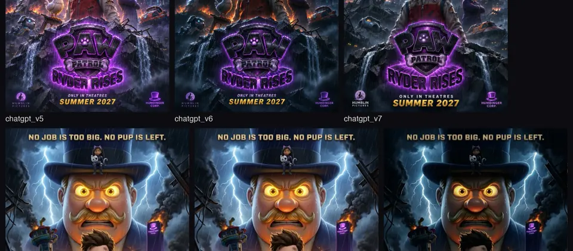

Adventure Bay has fallen. The pups are gone. Mayor Humdinger owns the city, the sky and the night. Locked in an island prison, the boy who answered every call has one call left to make.
No job is too big. No pup is left.

An unsanctioned fan parody · Written, directed & edited by Yoni Levy
Fan trailer
From the film
01 / 10
Coming never.
Painted as new key art, not stitched from frames. Twenty-eight versions, side-by-side model tests, then a fifteen-tile rebuild where every character was re-rendered against official references, typeset in Photoshop at 5376 × 7200.
Download poster

Ten months
in the making.
From the first concept frame in January to the last cut in November, the whole production ran on one desk and a handful of house rules.
Prod.Ryder Rises
Roll66concept frames
Scene47cuts in the trailer
Take46picture versions
Dissolves0ever
Created byYoni Levy
DateJan - Nov 2026
StudioHumblin Pictures
Two frames.
One move.
Every shot started as two designed frames: where the camera begins and where it lands. The direction is everything in between.
Adventure Bay falls
One flash of lightning, and the town every kid knows is gone.


The studio ident
The same frame at both ends. The ride across the moon is the whole direction.


The production,
frame by frame.

The seed
The idea goes back to March 2025. I tried it in Sora, the leading video model of the day. It served a picnic of knock-off pups. The idea went back in the drawer.

One last Sora try
Ten months later, one more go. Sora cast Ryder as a grown man with stubble. Twenty minutes later, the first real frame was made somewhere else.

The world, first
Sixty-six concept frames across seven acts, before a single shot moved.

Principal photography
Forty-two shots at 2912 × 1280. The camera move agreed first, then "go".

Music first
The cut rebuilt from the score outward: 46 picture versions against 27 mixes. Every line here is a cut.

The one-sheet
Twenty-eight versions until not one pixel looked generated.
House rules
- No dissolves. Ever.Hard cuts, cuts on motion, and lightning that lives inside the storm.
- Speeding up is not cutting.A shot that needs energy gets faster, never shorter.
- Agree the move, then go.Nothing is generated until the camera, duration and both end frames are approved.
- Characters stay on-model.Official references beat lookalikes. Every time.
Visuals generated with AI image and video tools, directed shot by shot. Story, edit, sound and design by Yoni Levy.
Humblin Pictures presents
- Written byYoni Levy
- Directed byYoni Levy
- Edited byYoni Levy
- Production designYoni Levy
- Visual effectsYoni Levy
- Sound designYoni Levy
- Title designYoni Levy
- Key artYoni Levy
- Produced byYoni Levy
- CateringYoni Levy
One call left.
I write and make things like this. If you have a story, a brand or a wild idea, I'd like to hear it. I answer every one.
Ryder Rises is by Yoni Levy: writer, content creator and designer, a builder and product person who researches AI for media creation. Father of Libi and Nuri, who have seen every episode.